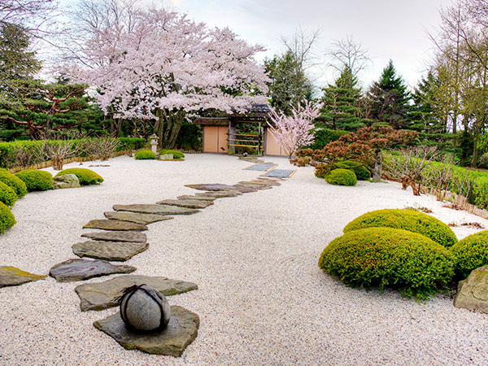
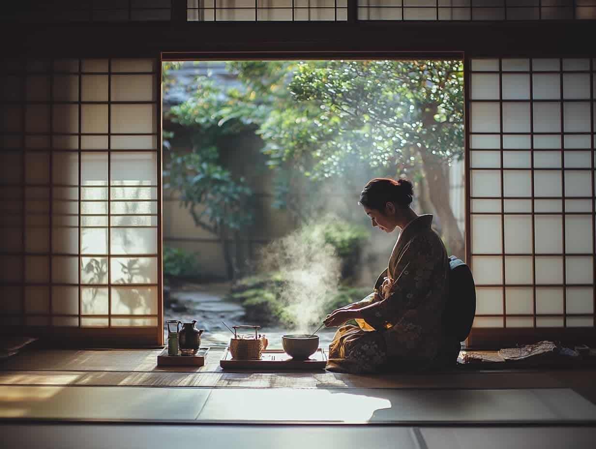
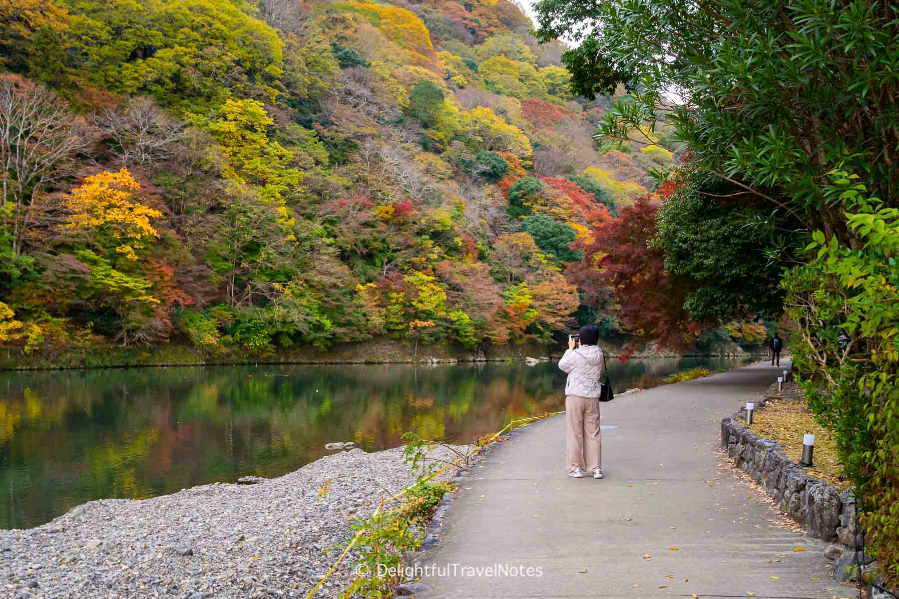

Things To Do
Three easy ideas for a first visit.
1) Zen Gardens
Kyoto’s zen gardens are quiet places made for thinking and slowing yourself and your mind down. At Ryoan ji you’ll see carefully raked gravel and simple stones that feel calm and balanced. At Kinkaku ji, the Golden Pavilion shines and casts a beautiful glow over the pond and trees, and view changes with the seasons. Go really early in the morning when it’s less crowded, walk slowly, and keep your voice low to match the peaceful atmosphere.
2) Tea Ceremony
A tea ceremony in Kyoto is all about respect and mindfulness. The host first warms the bowl, scoops matcha, and then whisks the tea until it’s smooth, even, and bright green. Guests bow, turn the bowl, and take small sips at a time. The room only has simple tatami mats, a flower, and maybe a hanging scroll so you can focus on the moment. It’s a gentle way to experience Japanese culture without rushing.
3) Arashiyama Walk
Arashiyama is a nice half day trip with easy walking and amazing photos. You can start at the bamboo grove while it’s still quiet, then take a slow stroll to the Katsura River to see boats and treeb covered hills. Small cafes and snack stands line the streets, so you can grab something light and keep exploring energized. If you have time, you can also cross the bridge and wander along the water for a relaxing view.